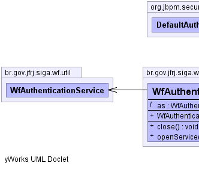
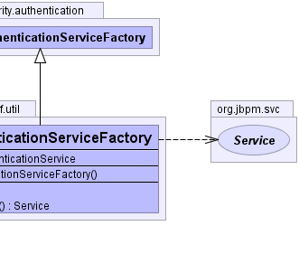

org.jbpm.security.authentication.DefaultAuthenticationServiceFactory
br.gov.jfrj.siga.wf.util.WfAuthenticationServiceFactory
org.jbpm.security.authentication.DefaultAuthenticationServiceFactory
br.gov.jfrj.siga.wf.util.WfAuthenticationServiceFactory
|
|||||||||
| PREV CLASS NEXT CLASS | FRAMES NO FRAMES | ||||||||
| SUMMARY: NESTED | FIELD | CONSTR | METHOD | DETAIL: FIELD | CONSTR | METHOD | ||||||||
java.lang.Object
public class WfAuthenticationServiceFactory
Classe que representa uma fábrica de serviços de autenticação.
|  |  |
| Field Summary | |
|---|---|
(package private) WfAuthenticationService |
as
|
| Constructor Summary | |
|---|---|
WfAuthenticationServiceFactory()
|
|
| Method Summary | |
|---|---|
void |
close()
Fecha a fábrica. |
org.jbpm.svc.Service |
openService()
Retorna um serviço de autenticação WfAuthenticationService. |
| Methods inherited from class java.lang.Object |
|---|
clone, equals, finalize, getClass, hashCode, notify, notifyAll, toString, wait, wait, wait |
| Field Detail |
|---|
WfAuthenticationService as
| Constructor Detail |
|---|
public WfAuthenticationServiceFactory()
| Method Detail |
|---|
public void close()
close in interface org.jbpm.svc.ServiceFactoryclose in class org.jbpm.security.authentication.DefaultAuthenticationServiceFactorypublic org.jbpm.svc.Service openService()
openService in interface org.jbpm.svc.ServiceFactoryopenService in class org.jbpm.security.authentication.DefaultAuthenticationServiceFactory
|
|||||||||
| PREV CLASS NEXT CLASS | FRAMES NO FRAMES | ||||||||
| SUMMARY: NESTED | FIELD | CONSTR | METHOD | DETAIL: FIELD | CONSTR | METHOD | ||||||||